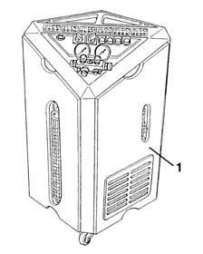
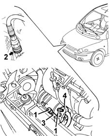
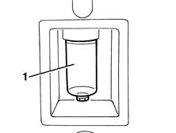

5040A10 Air conditioning refrigerant CIRCUIT - Draining and Refilling
- Path
- Procedures > 50 AUXILIARY UNITS > 5040 AIR CONDITIONING CASING AND COMPONENTS > 5040A air conditioner coolant circuit > 5040A10 Air conditioning refrigerant CIRCUIT - Draining and Refilling
- Kind
- repair procedure (removal / refitting; the operation number is the code)
- Applies to
- all engines; all production periods
- Interactive page
- https://sloeber94.github.io/elrnDB-fMltpl/en/#/2891804
Applies to: all engines; all production periods
Applies to: all engines; all production periods
1. Use the special Cleaner 134 draining/repressurizing equipment.

Applies to: all engines; all production periods
Let the engine run with the air conditioning switched on for 10 - 15 minutes.
1. Undo the repressurizing valve plugs.
2. Before attaching the connectors to the needle valves, move the knurled ring nut upwards.
3. Connect the high pressure connecting pipe (HIGH) to the corresponding rapid attachment valve.
4. Connect the low pressure connecting pipe (LOW) to the corresponding rapid attachment valve.

Applies to: all engines; all production periods
Start the procedure for draining the coolant fluid, following the instructions in the equipment manual.
1. Whilst draining the system, the fluid removed from the compressor should be collected in a special container.

Applies to: engines: 1.6 16v; all production periods
Refill the system with the same amount of recommended fluid shown on the container.
 | Type | Component | Name | Qty. |
|---|---|---|---|---|
- | Oil | Air conditioner compressor | PAG UCON 488 | - |
Applies to: engines: 1.9 JTD 8V; all production periods
Ripristinare nell'impianto la stessa quantità di olio indicata nel contenitore.
| Type | Component | Name | Qty. |
|---|---|---|---|---|
- | Oil | Air conditioner compressor | PAG SP 20 | - |
Applies to: all engines; all production periods
If certain components are replaced, the following quantities of fluid must be added for each of the components replaced:
- Drier filter, 15 cm3
- Pipes, 5 cm3 /m
- Evaporator, 40 cm3
- Condenser, 40 cm3
In the case of accidental breakages which result in the rapid draining of the system (in less than 5 minutes), it is not possible to determine the exact amount of fluid which has escaped because of the high pressure of the fluid. Add 50 cm 3 of fluid
Start the coolant fluid repressuring procedure, following the instructions in the equipment manual.
Introduce the recommended quantity of coolant fluid.
| Type | Component | Name | Qty. |
|---|---|---|---|---|
- | Coolant fluid [kg] | Air conditioning circuit | R134a | 0.650 |
In the case of damage to the compressor or other system components followed prolonged exposure to the air of the pipes (more than 6 hours), the system "WASHING" procedure has to be carried out, proceeding as follows.
Clean the pipes connected to the compressor using an air line.
Connect the (now drained) system to the repressurizing equipment.
Introduce the recommended quantity of coolant fluid at the high pressure side.
Recover the coolant fluid from the low pressure side.
Repeat the introduction and recover the fluid.
Proceed with the system draining and repressurizing operations as described previously.
Applies to: engines: 1.6 16v; all production periods
Refill the system with the recommended amount of fluid.
| Type | Component | Name | Qty. |
|---|---|---|---|---|
- | Oil (cm3) | Air conditioner compressor | PAG UCON 488 | 265 |
Applies to: engines: 1.9 JTD 8V; all production periods
Refill the system with the recommended amount of fluid.
| Type | Component | Name | Qty. |
|---|---|---|---|---|
- | Oil (cm3) | Air conditioner compressor | PAG SP 20 | 130 |
Topics linked from this page (1)
Topics that link to this page (19)
- L11 CLIMATE CONTROL WORKING IRREGULARLY
- L12 CLIMATE CONTROL TOO COLD
- Introduction - AIR CONDITIONING CASING AND COMPONENTS
- 5040B Check on operation of air conditioning system (pressures)
- 1004B12 power unit with manual gearbox - r+r for versions with a/c
- INTRODUCTION
- 5040A14 air conditioner cooling circuit - check and repair any leaks by tightening fittings
- 5040A20 air conditioner compressor - r+r - includes fluid level check and top up if necessary
- 5040A40 air conditioner condenser - r+r
- 5040A44 air conditioner dehydrating filter/accumulator - r+r
- 5040A50 pipe from compressor to air conditioner condenser - r+r
- 5040A52 pipe from condenser to dehydrating filter - r+r
- 5040A54 pipe from dehydrating filter to expansion valve - r+r
- 5040A58 pipe from expansion valve to compressor - r+r
- 5040B30 expansion valve (tube orifice) - r+r
- 5040B64 sensor on evaporator for a/c ecu - r + r
- 5040C10 air conditioner box - r+r
- 5040C12 air conditioner housing - r r with facia disconnected
- 5040C64 a/c evaporator - r+r